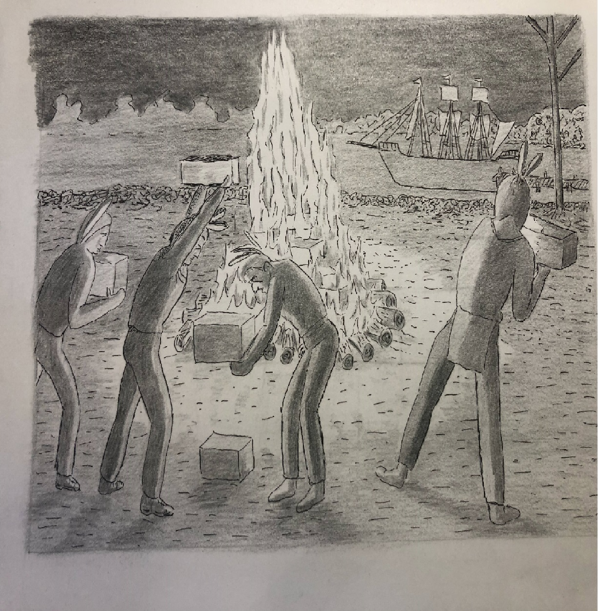

The Greenwich Tea Party

The Greenwich Tea Party was a tea party that took place in December 1774 at Greenwich, NJ.
This event is also known as the Greenwich Tea Burning because the participants burnt the tea instead of dumping the tea into water.
Learn more about the Greenwich Tea Party by reading newspaper articles,
excerpts from journals, and other textual sources. After studying, test
your knowledge by taking a quiz.